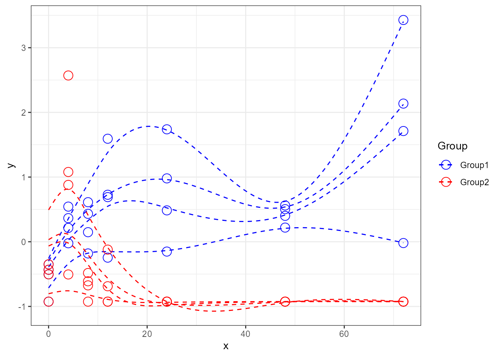

Plotting options
Arnaud Wolfer
2019-10-03
Source:vignettes/plotting-options.Rmd
plotting-options.RmdThe santaR package is designed for the detection of significantly altered time trajectories between study groups, in short time-series.
As the visualisation of significantly altered time-trajectories is critical to the interpretation of the process under study, this vignette will detail the plotting options present in santaR. santaR_plot() returns a ggplot2 plotObject that can be further modified using ggplot2 grammar.
Plotting options
First we can analyse a subset of data using santaR_auto_fit(), returning a list of SANTAObj.
##
## This is santaR version 1.1.2# Load a subset of the example data
tmp_data <- acuteInflammation$data[,1:6]
tmp_meta <- acuteInflammation$meta
# Analyse data, with confidence bands and p-value
res_acuteInf_df5 <- santaR_auto_fit(inputData=tmp_data, ind=tmp_meta$ind, time=tmp_meta$time, group=tmp_meta$group, df=5, ncores=0, CBand=TRUE, pval.dist=FALSE)## Input data generated: 0.03 secs## Spline fitted: 0.13 secs## ConfBands done: 14.85 secs## total time: 15.02 secsBasic plot
Each variable can be accessed either by its list position or variable name:
# Default plot
# individual points, individual trajectories, group mean curves and confidence bands
# access by list position
santaR_plot(res_acuteInf_df5[[5]])

The individual points, trajectories, group mean curves and confidence bands can be turned on or off:
# only groupMeanCurve
santaR_plot(res_acuteInf_df5$var_5, showIndPoint=FALSE, showIndCurve=FALSE, showGroupMeanCurve=TRUE, showConfBand=TRUE)
# only Individuals
santaR_plot(res_acuteInf_df5$var_5, showIndPoint=TRUE, showIndCurve=TRUE, showGroupMeanCurve=FALSE, showConfBand=FALSE)
# add confidence bands (only available if previously calculated)
santaR_plot(res_acuteInf_df5$var_5, showIndPoint=TRUE, showIndCurve=TRUE, showGroupMeanCurve=TRUE, showConfBand=TRUE)
Adding options
Title and axis can be altered to suit the analysis:

# remove the legend
santaR_plot(res_acuteInf_df5$var_5, title='A variable, no legend', legend=FALSE)
# force purple and green color
santaR_plot(res_acuteInf_df5$var_5, title='A variable in different colors', colorVect = c('purple','green'))
Updating plot with ggplot2 grammar
santaR_plot() returns a ggplot2 plotObject that can be modified using all the range of ggplot2 grammar:
## Warning: package 'ggplot2' was built under R version 3.6.1 # add x and y labels by adding it outside the plotting function [not useful but shows that any ggplot command can be added to the plot]
santaR_plot(res_acuteInf_df5$var_5, title='A variable') + xlab('Time') + ylab('Variable value')
# Constrain the x axis (will remove points and raise warnings)
santaR_plot(res_acuteInf_df5$var_5, showConfBand=FALSE, title='A variable', xlab='Time', ylab='Variable value') + xlim(0,48)## Warning: Removed 4 rows containing missing values (geom_point).## Warning: Removed 84 rows containing missing values (geom_path).
## Warning: Removed 84 rows containing missing values (geom_path).
## Warning: Removed 84 rows containing missing values (geom_path).
## Warning: Removed 84 rows containing missing values (geom_path).
## Warning: Removed 84 rows containing missing values (geom_path).## Warning: Removed 4 rows containing missing values (geom_point).## Warning: Removed 84 rows containing missing values (geom_path).
## Warning: Removed 84 rows containing missing values (geom_path).
## Warning: Removed 84 rows containing missing values (geom_path).
## Warning: Removed 84 rows containing missing values (geom_path).
## Warning: Removed 84 rows containing missing values (geom_path). # Looser y limits
santaR_plot(res_acuteInf_df5$var_5, title='A variable', xlab='Time', ylab='Variable value') + ylim(-2,5)
Multiplots
Plots can be stored in a variables and combined in multiplots using gridExtra grid.arrange():
library(gridExtra)
# store plot in a variable, plot multiple variables...
p1 <- santaR_plot(res_acuteInf_df5$var_3, title='First variable', xlab='Time', ylab='Variable value')
plot(p1)p2 <- santaR_plot(res_acuteInf_df5$var_4, title='Second variable', xlab='Time', ylab='Variable value')
# multiplot
grid.arrange(p1, p2)
# Force both plots on the same y limits (remove legend from plots)
p1 <- santaR_plot(res_acuteInf_df5$var_3, title='First variable', xlab='Time', ylab='Variable value', legend=FALSE)
p2 <- santaR_plot(res_acuteInf_df5$var_4, title='Second variable', xlab='Time', ylab='Variable value', legend=FALSE)
p1 <- p1 + ylim(-1.2, 4.2)
p2 <- p2 + ylim(-1.2, 4.2)
grid.arrange(p1, p2, ncol=2 )